As new energy sources become the core of the global energy transition, energy storage, as a "necessary component for wind and solar power generation," is experiencing explosive growth. Energy storage PACKs, as the "core energy carrier" of energy storage systems, are becoming the most dazzling golden track in the lithium battery industry chain, boasting an annual growth rate of 48%.
Unlike power battery packs which are "range-oriented", energy storage packs are designed with "long cycle life, high safety and high reliability" as their core requirements. They integrate battery cells, BMS management system, thermal management and structural protection into one, and are the key hub connecting battery cells and end-user energy storage scenarios. They are also the core link that determines the performance, lifespan and safety of energy storage systems.
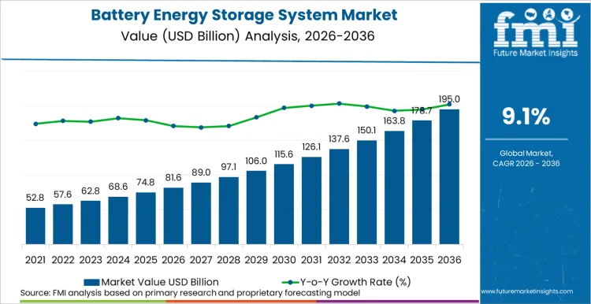
The numbers speak for themselves. The global BESS market is valued at approximately USD 81.6 billion in 2026 and is projected to reach USD 195 billion by 2036, expanding at a CAGR of 9.1%. More broadly, global energy storage system (ESS) capacity reached 275.3 GWh in 2025 — a 61.3% increase from the previous year — and the world is expected to add another 353.4 GWh in 2026. Global BESS shipments surged 75.5% in 2025 to 421.2 GWh, with 600 GWh projected for 2026. This is the golden sector.
The Scale of the 2026 Momentum
In 2026, the global energy storage market is poised for explosive growth. Industry forecasts predict that new global energy storage capacity will reach 380-480 GWh, representing a year-on-year increase of 40%-50%, with the Chinese market expected to exceed 200 GWh, a year-on-year increase of approximately 60%. As a core component of energy storage systems, the demand for energy storage PACKs is surging accordingly, making it the fastest-growing segment in the midstream lithium battery industry.
Global Shipments and Capacity Additions
J.P. Morgan's analysis projects that stationary energy storage battery shipments surged by 50% in 2025, followed by projected 43% growth in 2026. BESS demand for lithium is expected to grow 55% in 2026, following a 71% jump in 2025, and by 2026, energy storage is set to account for approximately 31% of total global lithium carbonate equivalent consumption, up from just 23% in 2025. By 2030, BESS is forecast to represent 36% of global lithium consumption — a staggering transformation from niche application to primary demand driver.
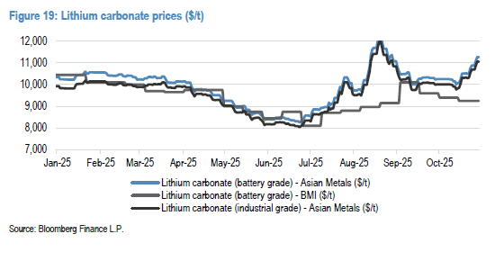
On the deployment side, China is expected to add 203.5 GWh of new energy storage capacity in 2026, the United States 49 GWh, Europe 35.1 GWh, and the Middle East — one of the fastest-growing regions — 20.1 GWh. Cell shipments globally are forecast at 801 GWh in 2026, nearly doubling from the previous year. Global energy storage demand has already surpassed 1 TWh total deployed capacity in 2026, marking a historic inflection point.
The Market's Financial Magnitude
Multiple research firms converge on a consistent picture. The global advanced energy storage market is estimated at USD 26.39 billion in 2026, projected to reach USD 51.42 billion by 2033 at a 10% CAGR. Lithium-ion batteries dominate with an estimated 41.7% share in 2026, and pack prices have declined by over 80% since 2013, enabling widespread adoption across EVs, grid storage, and industrial applications. UBS predicts global energy storage demand rising 40% in 2026, propelled significantly by U.S. AI needs.
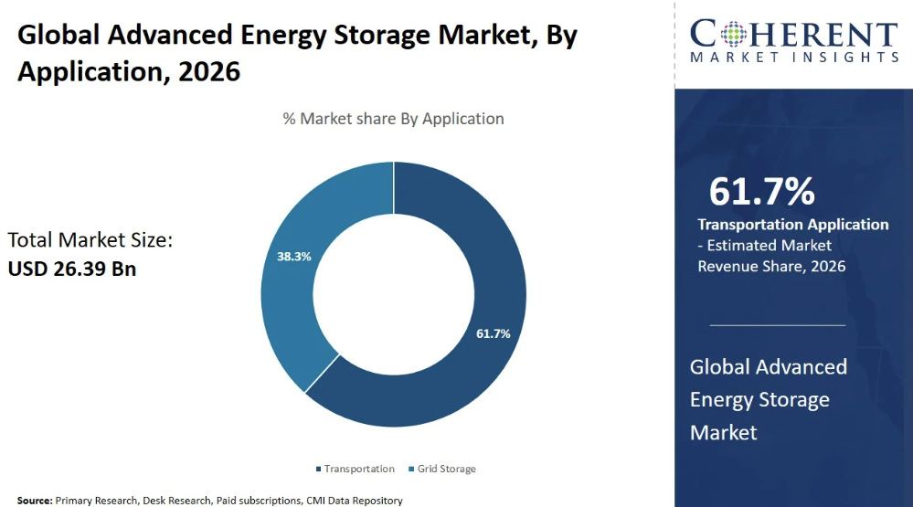
At the same time, the BESS market for data centers alone was valued at USD 4.38 billion in 2025 and is estimated to reach USD 4.96 billion in 2026 — representing just one fast-growing vertical within this sprawling sector.
India: The Most Exciting Story of 2026
From Tenders to Execution
If there is one country that embodies the energy storage breakout of 2026, it is India. India's battery energy storage capacity additions are expected to rise from approximately 507 MWh in 2025 to nearly 5 GWh in 2026 — a nearly tenfold increase. This is not a projection built on optimism; it is grounded in a project pipeline that has already been tendered, financed, and is now under active construction.
The year 2025 witnessed an unprecedented tendering surge — 69 tenders amounting to 102 GWh of capacity, nearly equal to the total issued between 2018 and 2024 combined. Cumulative capacity under execution rose by 84% to 224 GWh, setting the stage for large-scale commissioning in 2026. As of February 2026, 0.8 GWh of BESS capacity is operational, with approximately 6 GWh worth of capacity expected to come online by December 2026.
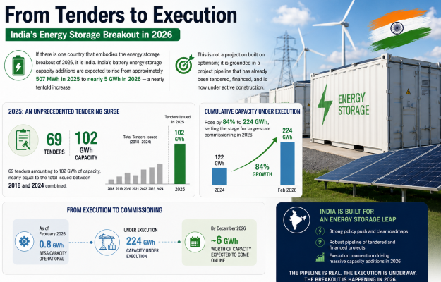
India's Policy Architecture
India's BESS trajectory in 2026 is not accidental — it is the result of deliberate, layered policy support assembled over the last three years:
- Viability Gap Funding (VGF): The Government of India has introduced ₹91 billion (~$1.09 billion) in VGF support for 43.2 GWh of BESS capacity, with individual standalone BESS projects eligible for up to 40% capital cost coverage through VGF grants.
- ACC-PLI Scheme: The flagship Advanced Chemistry Cell PLI scheme, with an outlay of ~₹18,100 crore, was designed to catalyse 50 GWh of domestic cell manufacturing capacity. At least 10 companies have announced plans to set up nearly 178 GWh of battery capacity in India over the next five years.
- National Electricity Plan: India's NEP projects a requirement for 16.13 GW / 82.37 GWh of energy storage capacity by FY 2026–27, combining 8.68 GW from BESS and 7.45 GW from pumped hydro.
- Long-Term Vision: The CEA estimates 411.4 GWh of total energy storage will be needed by 2031–32, with India targeting 500 GW of non-fossil capacity by 2030. Industry estimates suggest the country will require 150–200 GWh of stationary storage by 2030.
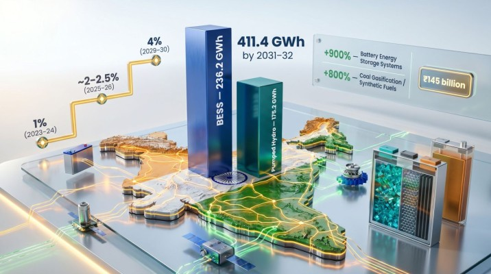
India's BESS market was valued at USD 1.59 billion in 2025 and is expected to reach USD 20.37 billion by 2035 — a CAGR of 29.1%. The 2026–2030 era is being described by analysts as "South Asia's storage golden window".
Landmark Projects Shaping Market Confidence
Several high-profile projects are directly reshaping investor confidence in India's BESS sector:
- Adani Energy Solutions brought online a 40 MW / 120 MWh BESS in Gujarat, paired with 300 MW of solar, under a 25-year PPA at ₹5.95 per kWh — demonstrating the commercial viability of hybrid storage models.
- JSW Energy and Fluence formed a joint venture to deploy 500 MWh across Karnataka and Maharashtra by 2026, backed by $150 million in investment.
- Standalone BESS tariffs dropped sharply from ₹2.21 lakh per MW per month in early 2025 to ₹1.48 lakh per MW per month by end-2025, reflecting increased competition and improving cost efficiencies.
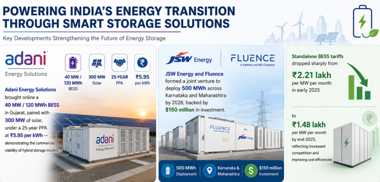
The Three Core Competencies of Energy Storage PACKs
Energy storage PACK is not simply a cell assembly; its core value lies in three dimensions: safety, lifespan, and efficiency. These are also the key factors that differentiate high-end from low-end products, with active balancing BMS technology becoming a mandatory feature.
1. High Safety: Upholding the bottom line of energy storage Energy storage systems are mostly deployed in large-scale clusters, and the losses can be enormous in the event of a safety accident. Energy storage PACKs ensure safety through triple protection: First, they use lithium iron phosphate cells (accounting for more than 90%), which have good thermal stability and are not easy to catch fire; Second, they integrate multi-level BMS safety protection, covering functions such as overcharge, over-discharge, overcurrent, over-temperature, and insulation monitoring, with millisecond-level response to anomalies; Third, they are equipped with fireproof, shockproof, and sealed encapsulation processes to prevent moisture and dust from entering, making them suitable for complex environments such as outdoors and basements.
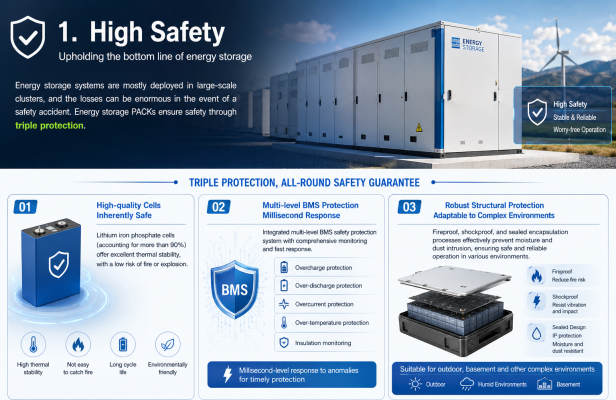
2. Long Lifespan: Reduces total lifespan costs Energy storage projects are typically designed for a lifespan of 15-20 years, which places extremely high demands on the cycle life of energy storage PACKs—mainstream products need to achieve a cycle life of over 8,000 cycles, with some high-end products exceeding 10,000 cycles. The widespread adoption of active balancing BMS technology effectively solves the problem of declining cell consistency during long-term operation, reduces manual maintenance costs, increases available system capacity, extends PACK lifespan, and significantly shortens the investment payback period for energy storage projects.
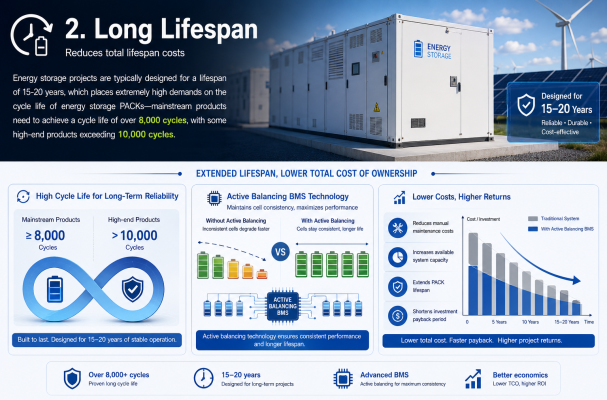
3. High Adaptability: Covering energy storage needs across all scenarios Energy storage PACKs can be customized to meet the needs of different scenarios, adapting to all scenarios including residential, industrial and commercial, grid-side, and AI computing centers.
- Residential energy storage: miniaturized and modular, supports self-consumption of photovoltaic power, enables peak-valley arbitrage, helps users save on electricity bills, and is suitable for rural households, urban rooftop residents and other scenarios.
- Commercial and industrial energy storage: large capacity, high rate, supports peak-valley arbitrage and demand management, helps enterprises reduce electricity costs, and is suitable for scenarios such as factories, supermarkets, and precision processing plants. The newly installed capacity in China is expected to reach 19.25 GWh in 2026, a year-on-year increase of 61.4%.
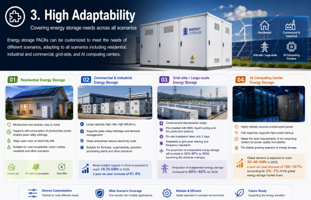
- Grid-side/Large-scale energy storage: Containerized standardized design, pre-installed with BMS, liquid cooling and fire protection systems, on-site installation takes only 3 days, adaptable to grid peak shaving and frequency regulation, the proportion of independent energy storage will increase to 60%-65% by 2026, becoming the absolute mainstay.
- AI computing center energy storage: highly reliable and fast response. Global demand is expected to reach 30-40 GWh in 2026, a year-on-year increase of 100-167%, making it the fastest growing segment of energy storage and accounting for 5-7% of the global energy storage market share.
Three Major Development Directions for Energy Storage PACKs in 2026
As competition intensifies in the energy storage market and the pace of technological iteration accelerates, energy storage PACKs are upgrading towards "more efficient, safer, and more economical" by 2026, with three major technological trends being particularly evident:
1. Active balancing completely replaces passive balancing: Active balancing achieves energy transfer through DC-DC modules, with no heat loss and a balancing efficiency of ≥90%. It can operate under all operating conditions, including charging, discharging, and resting, and can significantly extend battery life. It has become the standard configuration for mid-to-high-end energy storage PACKs and is gradually replacing energy dissipation-based passive balancing technology.
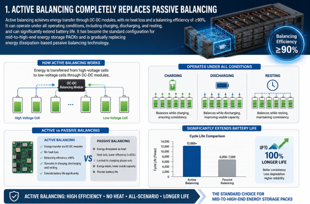
2. Integration and standardization go hand in hand: Containerized energy storage PACKs have become the mainstream for large-scale energy storage, improving volume utilization and significantly increasing installation efficiency; at the same time, the industry is gradually promoting standardized design to reduce production and operation and maintenance costs, achieve "plug and play", and adapt to the needs of large-scale deployment.
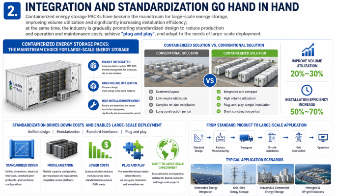
3. Synergistic development of multiple technology routes: In addition to the mainstream lithium iron phosphate energy storage PACK, sodium-ion cells are gradually being applied to low-temperature and remote scenarios, and the penetration rate of flow batteries and compressed air energy storage is accelerating in specific scenarios, forming a pattern of "lithium battery-led + multiple technologies in parallel", further expanding the application boundaries of energy storage PACK.
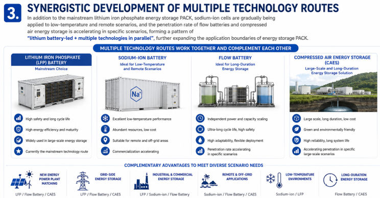
The Global Competitive Landscape
The BESS manufacturing landscape in 2026 is dominated by Chinese firms, with a handful of South Korean and emerging Indian players occupying the rest of the market. The top manufacturers and their market positions are:
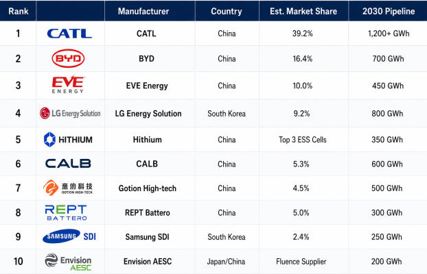
CATL controls nearly 40% of the global BESS market, supplying Tier 1 cells to Tesla , BMW Group , and Volkswagen , and operates advanced "Lighthouse" factories with 1.2 TWh pipeline capacity by 2030. BYD's Blade Battery (LFP) technology offers unmatched safety through vertical integration, eliminating third-party margins.
In the system integration layer, Fluence , Eaton , Schneider Electric , and Vertiv dominate the North American and European BESS deployment market, particularly for AI data center applications.
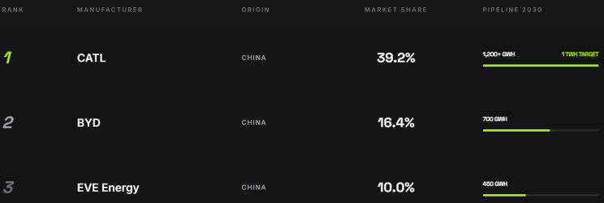
The Road Ahead: 2026 and Beyond
Globally, the investment case is clear. Nearly $1.2 trillion in BESS investment is needed by 2034. The global BESS market is projected at USD 195 billion by 2036. Cell shipments are racing toward the 1 TWh annual mark. AI is creating structurally new demand that no grid can absorb without storage.
For enterprises, energy storage PACK companies with self-developed BMS, active balancing technology, thermal management design, and standardized delivery capabilities will dominate the industry competition; for practitioners, the technological iteration and scenario expansion of energy storage PACKs will also bring more new opportunities.
The transition to new energy is irreversible, and the energy storage sector is poised for significant growth. Energy storage packs, as the "core hub" connecting energy production and consumption, are entering their golden age, with a promising future.